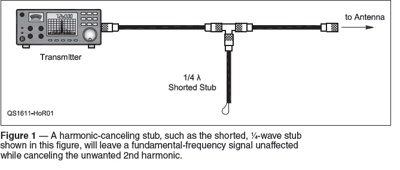
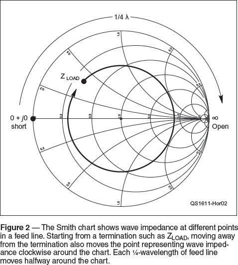
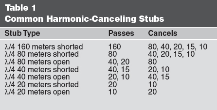
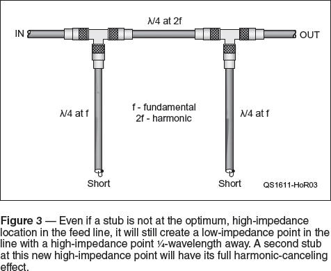

Experiment #166 — Optimizing Placement of Stubs
The idea of making harmonic filters using stubs — resonant sections of transmission line — is attractive because stubs are frugal, use widely available material, and give pretty good performance. Or do they? I’ve heard more than one confused stub-builder asking why they only saw a few dB drop in the unwanted signal. They want to know what they’re doing wrong. Their stub could be just fine — the problem might stem from where the stub is attached!
Stub Review
Lets back up for a minute and review.1 Stubs used as harmonic filters are usually 1⁄4- or 1⁄2-wavelength long and terminated in a short- or open-circuit. They are connected in parallel with the main feed line by using a T adaptor, assuming coaxial cable is being used. Figure 1 shows the basic connection technique.

A wave encountering the junction splits, with some of the wave traveling along the stub to the short or open circuit where it is completely reflected back toward the junction. The stub length and the termination are selected so that at the frequency of the undesired harmonic, the wave returning to the junction will be out of phase with and cancel harmonic waves in the main feed line, but leave waves of the fundamental frequency unaffected.2
That simplified view neglects one important thing — wave impedance in the feed line. We’re not talking about the feed line’s characteristic impedance, which is generally 50 or 75 Ω. Wave impedance is the ratio of voltage to current in the feed line. If the feed line is not terminated in its characteristic impedance (i.e. SWR > 1:1), the reflected wave interferes with the forward wave to create standing waves along the feed line. At some points, separated by 1⁄2 wavelength, the voltage to current ratio (wave impedance) will be a maximum. Just 1⁄4 wavelength away, the wave impedance will be a minimum.
You can see this change by using a Smith chart that shows the wave impedance in a feed line. From the point representing the termination impedance (ZLOAD in Figure 2), as you move along the line away from the termination (“Toward the Generator” on the chart) each new point on the chart shows the different wave impedance at that location in the feed line. It is important to remember that the electrical distance in wavelengths will be different for the fundamental and for each harmonic!

If a feed line is terminated by a short circuit (0 + j0 Ω at the left side of chart), moving toward the junction increases the wave impedance along the way. After 1⁄4 wavelength (halfway around the chart) the wave impedance reaches infinity. If the stub is long enough, wave impedance will return to zero 1⁄2 wavelength from the termination.
Note that if the shorted stub is 1⁄4-wavelength long at the fundamental — presenting a high impedance at the junction — it will be 1⁄2-wavelength long at the harmonic and present a low impedance at the junction. The result is to short out the harmonic while leaving the fundamental unaffected. Neat trick, huh? Table 1 shows a variety of 1⁄4- and 1⁄2-wavelength stubs that can be used for a number of useful harmonic-canceling jobs. (See W2VJN’s book for a lot more!)

Why Impedance Matters
There is one more thing to consider. The wave impedance in the main feed line determines how much effect the stub’s low impedance will have at their junction. If the main feed line’s wave impedance at the junction is high, the stub’s low impedance will effectively “short out” the harmonic, reducing its amplitude quite a bit. If the main feed line’s wave impedance at the junction is low, however, the stub’s low impedance placed across it will have comparatively little effect.
For a monoband antenna like a single-band Yagi or ground plane matched to 50 Ω, the wave impedance along a 50 Ω feed line will be relatively constant at the fundamental. However, as anyone knows who has tried to transmit on 10 meters into a 20 meter monoband antenna, there is a sizable mismatch at the harmonic. This means the wave impedance for the harmonic will vary dramatically at different locations along the line and so will the effectiveness of a harmonic-canceling stub.
How big is the effect of stub placement? Both W2VJN and K9YC have modeled the harmonic attenuation of a stub at different locations in a feed line.3, 4 For the typical example of trying to cancel the 10 meter harmonic of a 20 meter signal, W2VJN’s simulation found that harmonic suppression could range from a worst-case low of 6.2 dB to a best-case maximum of 51.1 dB! (George’s model also simulated the effects of a transmitter’s output circuit, which is usually mistuned at the harmonic frequency.) So it’s quite realistic to find the performance of a filter stub very hit-or-miss just because of the varying wave impedance at different points along the feed line.
Finding the Right Place
How do you find the right place to locate a stub — or avoid the wrong place? The best way to start is by measuring the impedance of the antenna connected to the feed line — at the frequency of the harmonic you are trying suppress. Then find impedance along the feed line (again, at the harmonic) by using a modeling program like TLW (which comes with the ARRL Antenna Book), or TLDetails and ZPlots from AC6LA (ac6la.com), or SimSmith from AE6TY (www.ae6ty.com/smith_charts.html).
What if you can’t measure or model the antenna system? Or you can’t install the stub where a model says you should? The most common location for a harmonic filter stub is at the output of an amplifier or transmitter. The impedance at this point is strongly influenced by the output impedance of the transmitter so you can make a good guess about whether this is a high- or low-impedance point based on the output circuit.
If the final component (closest to the output connector, not including any RF chokes) of the transmitter’s filter or tuning circuit is a series inductor (as for a Pi-L network), the impedance at the harmonic will be high. (See k9yc.com/Coax-Stubs.pdf for a table listing the output circuits of many common amplifiers as well as more applications of stubs.) Attach the stub at the amplifier output or some multiple of 1⁄2-wavelengths away (at the harmonic). If the output component is a shunt capacitor (as for a Pi network), the impedance will be low so there should be 1⁄4-wavelength (or some odd multiple) of feed line between the transmitter output and the stub to place the junction at a high impedance point.
Another option is to force a high-impedance point by using a double stub as in Figure 3. Place the initial stub wherever you can. Then add 1⁄4 wavelength of cable (again, at the harmonic) to the main feed line and attach a second harmonic-canceling stub. The first stub creates a low-impedance point in the system and a high-impedance point 1⁄4-wavelength away. The second stub can take full advantage of the high-impedance point and provide an additional 30 dB or more of suppression.

The key to getting the most out of your stubs is to measure their effectiveness. Don’t expect one stub placed randomly in your antenna system to solve your harmonic problems completely. Study how the stubs work, learn to make the necessary measurements, and use modeling tools like those listed here to design and install them. You will be glad you did!
Notes
1How transmission line stubs work and how to design the basic types were covered in “Hands-On Radio” experiments 22, 57, and 58. Experiment 81, on synchronous transformers, covers related ideas. All previous “Hands-On Radio” experiments are available to ARRL members at arrl.org/hands-on-radio.
2There are many variations on this basic scheme. See the ARRL Antenna Book chapter on Transmission Lines (www.arrl.org/antenna-book) for more information. Even more detail is available in W2VJN’s Managing Interstation Interference, available from International Radio (www.inrad.net).
3J. Brown, K9YC, “Optimizing the Placement of Stubs for Harmonic Suppression,” National Contest Journal, July/August 2015, pp 8 – 11.
4G. Cutsogeorge, W2VJN, “Optimizing the Performance of Harmonic Attenuation Stubs,” National Contest Journal, Jan/Feb 2015, pp 3 – 4.